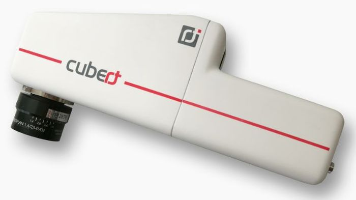

Cubert S185 SE FireFleye hyperspectral camera
A snapshot hyperspectral sensor used to collect high-resolution spectral data over shallow-water and coastal environments. The camera supports calibration and validation of satellite-derived products for bathymetry, habitat mapping, and water quality.